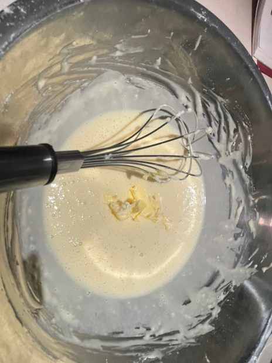
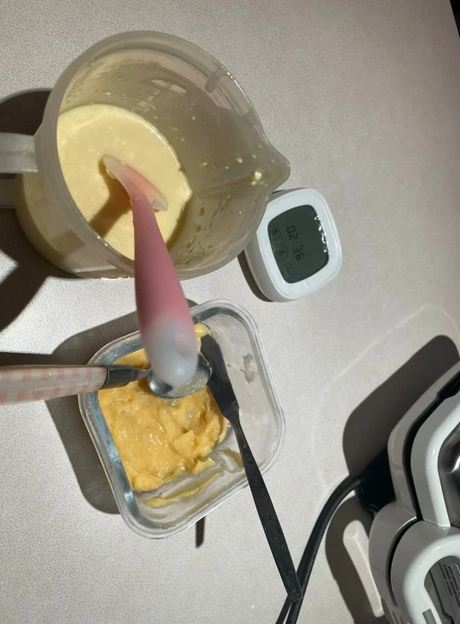
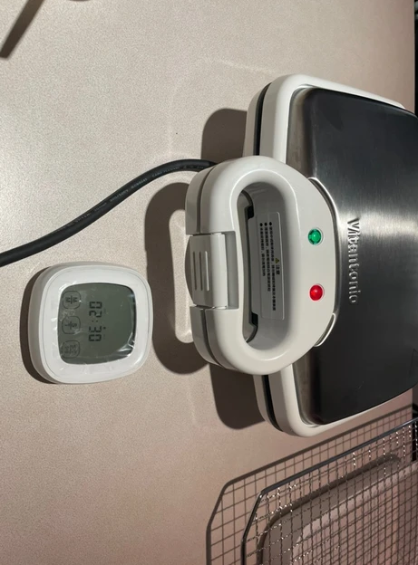

食材&作法
雞蛋1顆
沙糖 20 g
塩 少許
鮮奶 100
無塩奶油 15 g
低筯麵粉 100 g
泡打粉 3.5 g
卡士逹醬 少許
1.蛋與沙糖攪拌均勻。
2. 後續加入塩及鮮奶接續拌勻。
3. 最後加入泡打粉及過篩的低筯麵粉，粉漿即完成。
4. 將粉漿慢慢倒入已預熱（鯛魚燒）烤盤中，分三個階段：1.模具中先倒入一半粉漿2.加入少許卡士達醬3、再將粉漿倒滿；蓋上機器上蓋，烘烤4-5分鐘（建議烤盤均抺上無塩奶油，烤色均勻且美觀）。
5. 再將蛋白霜分2-3次加入拌好的蛋黃馬斯卡邦內拌勻。
6. 烘乾4-5鐘後即完成鯛魚燒，移入烤架放涼。